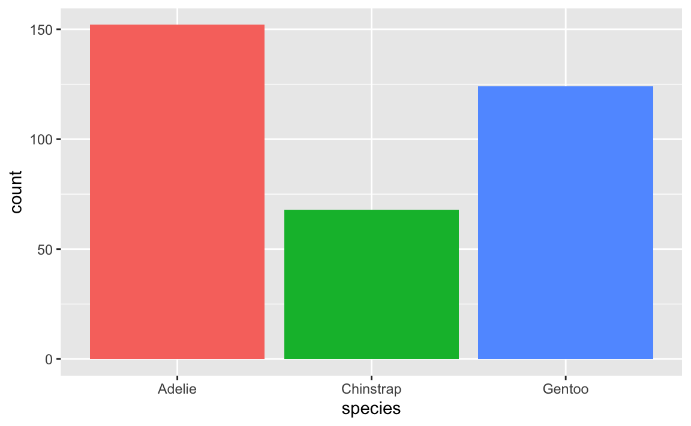

#|eval: false
# install.packages("usethis")
# library(usethis)
# use_git_config(user.name = "Monchi", user.email = "monchi@example.org")}Improving scientific workflows with reproducible and collaborative projects in R
III SIBECOL and IV AEET meeting. Another science is possible
0.1 Introduction
The objectives of this workshop are:
Effective collaboration, using the version control Git within RStudio.
Pushing local changes in R to a remote repository.
Sharing reproducible research with the community through GitHub.
Meet Quarto and learn the anatomy of a qmd file to authoring Quarto documents
Basic functionalities of Quarto, enabling attendees to create good-looking and easily shareable documents.
0.1.1 Workshop structure
| Bloques | Tiempo estimado |
|---|---|
| Introduction to Git and GitHub | 30 min |
| Repositories and R projects | 15 min |
| Working flow in Git and GitHub | 45 min |
| Break | 30 min |
| Introduction to Quarto | 15 min |
| Structure of a Quarto document | 15 min |
| Crear un documento Quarto | 40 min |
| Break | 10 min |
| Collaborative work with Git and GitHub | 40 min |
0.2 Who we are?
Verónica Cruz Alonso (veronica.cral@gmail.com), Elena Quintero (elenaquintero.qb@gmail.com) and Guillermo Fandos (gfandos@ucm.es)
And you… who are you?
0.3 Introducción
Probably, at some point, you’ve struggled with broken scripts that no longer work, repeated the same calculations multiple times to update a manuscript, or dealt with co-authors’ comments while working on different versions of a document. To help avoid these situations and other challenges in scientific workflows, this workshop explores the powerful combination of GitHub and Quarto in RStudio to author scientific documents. The aim is to foster among researchers the adoption of open and reproducible practices while improving their project and data management skills. In particular, we will introduce the version control system Git, the remote repository GitHub, and the publishing framework Quarto. Quarto is the next generation of R Markdown for publishing dynamic documents with multi-lingual programming language support. These tools are becoming increasingly useful in ecology, as they allow the creation of reproducible documents —including text and analyses— while tracking changes in R and facilitating collaboration among multiple users.
0.3.1 Git
Git (https://git-scm.com/) and GitHub (https://github.com/) are becoming increasingly relevant in various fields as data volumes increase and analyses become more complex. We will learn how Git can be used to control versioning in projects or files, and how this is especially useful in collaborative projects using GitHub.
Though there are many manuals available on Git and GitHub, these are complex tools. Git was created to help software developers collaborate on large-scale projects, so it can be convoluted, offer multiple solutions to the same problem, and have a steep learning curve. Still, Git and GitHub solve many common problems:
File overwriting
Endless “final” versions

“FINAL.doc” Working by mistake on a non-final version
Conflicting copies when two people edit simultaneously
Edits without change tracking

Ediciones sin control de cambios
0.3.2 What is Git
Git is a distributed version control system (like MS Word’s track changes). It tracks project progress through snapshots. These allow you to see what changed, who did it, and why — and return to earlier versions.
Moreover, Git facilitates parallel work among multiple collaborators. While in other version control systems (e.g., Subversion (SVN, https://subversion.apache.org/) or Concurrent Versions System (CVS, http://cvs.nongnu.org/)) there is a central server and any change made by a user is synchronized with this server and then with the rest of the users, Git is a distributed version control system that allows all users to work on the project simultaneously and take individual “snapshots” of their work, which can later be merged. Other distributed version control alternatives comparable to Git include Mercurial (https://www.mercurial-scm.org/) and Bazaar (https://bazaar.canonical.com/), but Git is by far the most widely used.

Git emerged in 2005, following the breakdown of the relationship between the community developing Linux and the commercial company behind BitKeeper (a distributed version control system). At that point, BitKeeper stopped being free, which led the Linux developer community (particularly Linus Torvalds, the creator of Linux) to develop their own version control tool based on their experience using BitKeeper. Some of the main goals for the new system were speed, simple design, strong support for non-linear development (branches), a distributed model, and the ability to handle large datasets. Therefore, the original purpose of Git was to help teams of software developers collaborate on large-scale software projects. In this regard, we will see that there are multiple ways to solve the same problem and that the learning curve can be steep for non-developers.
0.3.3 What is GitHub
GitHub is an online hosting server or remote repository for storing Git-based projects, enabling collaboration between different users or even with oneself [@galeano2018; @perez-riverol2016]. A repository is a directory where a project is developed, containing all the necessary files for it. Although there are other remote repositories (e.g., GitLab, https://gitlab.com/, or Bitbucket, https://bitbucket.org/) with similar functionality, GitHub is currently the most widely used. GitHub records the development of projects remotely, allows users to share projects with others, and provides cloud-based security, among other features.

When working on collaborative projects, the foundation of the interaction between Git and GitHub is that all collaborators agree that GitHub hosts the main copy of the project — that is, GitHub serves as the centralized copy of the otherwise distributed or decentralized version control system.
1 Instalation
1.0.1 üìùEjercicio 1.1
En este punto es necesario que tengas instalada la versión más reciente de R (https://cloud.r-project.org/), RStudio (https://www.rstudio.com/products/rstudio/download/), Git (https://happygitwithr.com/install-git.html) y una cuenta en GitHub (https://github.com/) creada.
Preséntate a Git (Chapter 7: Git-Intro)
üí°Debes usar el correo electr√≥nico asociado a tu cuenta de GitHub
En la terminal, compueba que has instalado Git correctamente:
git --versionPara ver el usuario utilizado para configurar Git:
git config user.namePara ver a qué cuenta de correo está asociado Git:
git config user.emailPara ver tanto el usuario como el correo asociado:
git config --global --list
⚡¿Qué es el shell? El shell (o terminal) es un programa en tu ordenador cuyo trabajo es ejecutar otros programas (ver https://happygitwithr.com/shell.html#shell). RStudio incorpora una terminal que se puede utilizar para interactuar con Git; sin embargo, también incorpora una pestaña llamada “Git” que contiene las funcionalidades básicas de Git y facilita mucho su uso.

üí°Para la resoluci√≥n de problemas durante la instalaci√≥n recomendamos mirar aqu√≠: https://happygitwithr.com/troubleshooting.html
Genera un PAT (Personal Access Token) para HTTPS
Git puede comunicarse con un servidor remoto utilizando uno de los dos protocolos: HTTPS o SSH. Nosotros utilzaremos HTTPS con personal access token (PAT, https://happygitwithr.com/https-pat.html).
#|eval: false
# install.packages("gitcreds")
# library(gitcreds)
# create_github_token() # generar un token, elegir temporalidad
# gitcreds_set() # acceder al Git credential storeüëÄ Conviene describir el prop√≥sito del token en el campo Note, porque se pueden tener varios PATs. No podrás volver a ver este token, as√≠ que no cierres ni salgas de la ventana del navegador hasta que almacenes el PAT localmente. ¬°Trata este PAT como una contrase√±a!
2 Repositorios y proyectos
Un repositorio es como un “contenedor” donde desarrollar un proyecto.
Para crear un repositorio en GitHub damos a “+ New repository”. Aquí se indica el nombre, una pequeña descripción, y si quieres que sea público o privado. Se recomienda iniciar el repositorio con un archivo “README” (Initialize this repository with a README) para recoger cualquier información esencial para el uso del repositorio (estructura, descripción más detallada del contenido, etc.).
En RStudio, creamos un nuevo proyecto y lo conectamos al repositorio: File > New project > Version control > Git > copiar el URL del repositorio que hemos creado de GitHub (está en la página principal de nuestro repositorio, en “clone or download”). Seleccionamos el directorio local donde queremos guardar el proyecto y pulsamos en “Create project”.
Si vamos al directorio local seleccionado, encontraremos la carpeta conectada a Git y GitHub que hemos creado en nuestro ordenador. Podemos copiar aquí todos los archivos que nos interesan para el proyecto (datos, imágenes, etc).
üí°Para más informaci√≥n sobre c√≥mo clonar el repositorio en GitHub (repositorio remoto) en nuestro ordenador (repositorio local) ver https://happygitwithr.com/rstudio-git-github.html para hacerlo desde RStudio y @galeano2018 para hacerlo mediante la l√≠nea de comandos.
üí°En caso de querer conectar un antiguo proyecto de RStudio a Git y GitHub, puedes seguir los pasos que se describen aqu√≠: https://happygitwithr.com/existing-github-first.html.
2.0.1 üìùEjercicio 1.2
Crea un repositorio en GitHub y conéctalo a un nuevo proyecto de RStudio (esto generará un repositorio (carpeta) en tu ordenador en la ubicación que hayas especificado). Incluir un archivo “.gitignore”
Crea un nuevo script de R en el directorio de trabajo (es decir, crea un script de R y guárdalo dentro del repositorio que has creado)
En RStudio ve a la pestaña Git para ver todos los documentos que han sido identificados por Git

2.0.2 Git ignore
Al crear un repositorio se recomienda crear un archivo “.gitignore”. Este archivo contendrá los nombres o extensiones de los archivos del proyecto que por defecto no queremos compartir aunque estén en el repositorio local (p. ej., el archivo “.Rhistory” que RStudio crea por defecto). Es una buena práctica ignorar archivos que no sean útiles para el resto de colaboradores así como archivos muy pesados (p. ej., una base de datos resultado de correr un script) para no subirlos y descargarlos continuamente de GitHub. Para añadir archivos al gitignore se puede utilizar el botón derecho del ratón sobre el archivo en la pestaña Git de RStudio pero también se puede añadir el nombre del archivo que desamos ignorar en el archivo “.gitignore” manualmente.
2.0.3 üìùEjercicio 1.3
Añade el archivo .Rproj de tu proyecto al archivo .gitignore.
Crea una carpeta llamada “datos” en tu directorio de trabajo. Añadela al .gitignore y guarda. ¿Qué ha pasado en la pestaña Git?
2.0.4 Estructura del repositorio de GitHub
En la página principal del repositorio en GitHub podemos encontrar las siguientes pestañas:
Code: contenido del proyecto
Issues: foro del proyecto para comentar fallos, tareas pendientes, hacer peticiones a los desarrolladores, preguntar dudas, etc. Se pueden asignar tareas o preguntas a los miembros del proyecto escribiendo “@” antes del nombre del colaborador. Una vez resuelto, el issue se cierra (Close issue).
Pull requests: veremos más adelante para qué sirve.
Actions: son pequeñas aplicaciones que realizan alguna acción cada vez que se sube un commit (p. ej. tests).
Projects: es como una hoja de cálculo con tareas, encargados, deadlines, status, etc. que se integra con las incidencias y solicitudes de incorporación de cambios para ayudar a planificar las tareas y realizar el seguimiento del trabajo.
Wiki: es un espacio para documentar el proyecto (hoja de ruta, estado, documentación detallada…).
Security: opciones de seguridad.
Insights: estadísticas del proyecto.
Settings

4 Flujo de trabajo en Git y GitHub
Git es capaz de rastrear todos los archivos contenidos en un repositorio. Para comprender cómo Git registra los cambios y cómo podemos compartir dichos cambios con nuestros colaboradores es importante entender cómo se estructura Git y cómo se sincroniza con GitHub. Hay cuatro “zonas” de trabajo:
Directorio de trabajo (working directory): es donde se está trabajando. Esta zona se sincroniza con los archivos locales del ordenador.
Área de preparación (staging area o Index): es la zona intermedia entre el directorio de trabajo y el repositorio local de Git. Es la zona de borradores. El usuario debe seleccionar los archivos que se van a registrar en la siguiente “captura” de Git.
Repositorio local (local repository o HEAD): es donde se registran todos los cambios capturados por Git en tu ordenador.
Repositorio remoto (remote repository): es donde se registran todos los cambios capturados por Git en la nube (GitHub).

4.1 ¿Cómo moverse de una zona a otra?
Se puede hacer mediante línea de comandos en la terminal y también mediante la pestaña integrada en RStudio, pero el proceso es el mismo.

Al principio todos los cambios realizados aparecen en amarillo porque Git no sabe que hacer con ellos. Estamos en el directorio de trabajo y puede que no nos interese guardar todos los cambios para el futuro.
Para añadir un cambio del directorio de trabajo al área de preparación hay que utilizar git add (en la pestaña Git de RStudio se hace seleccionando el archivo). Este comando indica a Git que se quieren incluir las actualizaciones de algún archivo en la próxima “captura” del proyecto y que Git las registre. Sin embargo, git add no afecta al repositorio local.
git add <nombre de archivo>: añade una actualización de algún archivo del directorio de trabajo al área de preparación.
Para registrar los cambios que nos interesen hay que utilizar git commit (en la pesta√±a Git de RStudio se hace clickando el bot√≥n ‚ÄúCommit‚Äù). Al ejecutar git commit se hace una ‚Äúcaptura‚Äù del estado del proyecto. Junto con el commit se a√±ade un mensaje con una peque√±a explicaci√≥n de los cambios realizados y por qu√© (p. ej. ‚Äúincluyo las referencias formateadas‚Äù). Cada git commit tiene un SHA (Secure Hash Algorithm) que es un c√≥digo alfanum√©rico que identifica inequ√≠vocamente ese commit (p. ej. 1d21fc3c33cxxc4aeb7823400b9c7c6bc2802be1). Parece dif√≠cil de entender, pero no te preocupes, s√≥lo tienes que recordar los siete primeros d√≠gitos 1d21fc3 üòÆ(es broma). Con el SHA siempre se pueden ver los cambios que se hicieron en ese commit y volver a esa versi√≥n fácilmente.
git commit -m "mensaje corto y descriptivo"

üí°Usar git commit es para el proyecto como usar anclajes cuando estamos escalando una pared de roca. Desarrollar un script sin commits es como escalar sin asegurarse: puedes avanzar mucho más rápido a corto plazo, pero a largo plazo las probabilidades de fallo catastr√≥fico son altas. Por otro lado, hacer muchos commits va a ralentizar tu progreso. Lo mejor: usar más commits cuando estás en un territorio incierto o peligroso.

Por último, git push permite subir los cambios que hemos hecho a GitHub y quedarán visibles para nuestros colaboradores (en la pestaña Git de RStudio se hace clickando el botón “Push”). Básicamente, git commit registra los cambios en el repositorio local y git push actualiza el repositorio remoto con los cambios y archivos asociados.
Cuando se retoma un proyecto tras horas, días o incluso meses, con git pull se descargan todas las actualizaciones que haya en GitHub (nuestras o de nuestros colaboradores), que se fusionarán (merge) con el último commit en nuestro repositorio local (en la pestaña Git de RStudio se hace clickando el botón “Pull”).

Además de los botones principales anteriormente descritos, en la pestaña Git de RStudio podemos observar el botón “Diff” que muestra los cambios que se han hecho a cada archivo desde el último commit y las ramas (que lo explicaremos más abajo). Clickando con el botón derecho del ratón podemos abrir los archivos que han sido modificados mediante “Open file” y con el botón “Revert” volvemos al estado del último commit (⚠️cuidado con esto porque te borrará los cambios realizados en tu directorio de trabajo).
4.1.1 üìùEjercicio 1.4
En el proyecto generado en el Ejercicio 1.2, guardad y subid los cambios realizados a GitHub (git add + git commit + git push)
üí°git status: muestra la rama en la que estamos y los cambios hechos y a√±adidos desde el √∫ltimo commit.
En el repositorio remoto de GitHub, en la pestaña Code podemos observar el contenido de nuestro proyecto, incluyendo cada commit realizado:

4.2 Navegar por el historial
El historial de un repositorio (üïòXX commits) contiene una lista de enlaces a todos los commits que se han realizado en cualquiera de las ramas. Dentro de cada commit se pueden ver los archivos a√±adidos o borrados en esa ‚Äúcaptura‚Äù y las l√≠neas de c√≥digo a√±adidas (en verde) o borradas (en rojo) en cada archivo modificado. Además, en el historial, se pueden a√±adir comentarios en l√≠neas concretas de c√≥digo o comentarios generales al commit entero.
En GitHub también se puede acceder a la historia de commits de cada archivo en concreto (History) y al autor de cada parte del código (Blame).
El historial del proyecto y de los archivos tambi√©n es accesible a trav√©s de RStudio (üïí).
üí°Más informaci√≥n sobre como navegar en el pasado del proyecto aqu√≠: https://happygitwithr.com/time-travel-see-past.html

üí°En los issues se puede referenciar a una l√≠nea concreta de c√≥digo de un estado concreto del proyecto entrando en el archivo en la pesta√±a Code y clickando en el n√∫mero de l√≠nea que se quiere comentar, o a un commit entero copiando el SHA.
üí°Si quiero volver atrás en el tiempo o si hago un cambio que no quiero ¬øc√≥mo lo puedo resolver? Hay m√∫ltiples opciones pero aqu√≠(en la secci√≥n de ‚ÄúLa he liado ¬øc√≥mo deshago los cambios?‚Äù) detallamos tres: restore, reset y revert.
5 Quarto
This part of the workshop is designed to provide an introduction to Quarto, a modern, open-source scientific and technical publishing system. Participants will learn the basics of creating dynamic documents, integrating code and text, and producing reproducible reports in multiple formats.
In addition to learning how to use Quarto, this section will also cover some essential first steps for practicing reproducible research, including the importance of literate programming, documenting analysis workflows, and properly licensing and sharing materials.
Some of the materials and ideas included here are inspired by openly available resources shared under Creative Commons licenses.
Specifically, parts of this course draw inspiration from:
- Tom Mock - Get started with Quarto workshop
- Casajus et al. (2021): Data Toolbox for Reproducible Research in Computational Ecology. Zenodo DOI
- The “Reproducible publishing with Quarto” short course by Mine Çetinkaya-Rundel at JSM 2024.
5.1 What is Quarto
Quarto is a dynamic document publishing system that allows you to create reports, books, manuscripts, presentations, and websites. It is a very versatile tool that supports multiple programming languages (R, Python, Julia, etc.) and output formats (HTML, PDF, Word, etc.). Quarto is based on R Markdown but offers a number of improvements and new features that make it more powerful and flexible. It can be used in different workspaces (e.g., RStudio, Jupyter) and has a visual editing interface in RStudio.

5.2 Why use Quarto
Quarto is an ideal tool for creating reproducible scientific documents and for collaborative work. It allows you to integrate code, text, and results into a single document, making it easier to produce scientific reports and publications. In addition, Quarto is compatible with Git and GitHub, enabling version control and efficient collaboration with others.


5.2.1 Brief history: Evolution from R Markdown
Quarto (https://quarto.org/) began as an open-source project in 2021 by Posit Software (formerly RStudio) and is based on over 10 years of experience with R Markdown. Quarto functions as an open-source scientific and technical publishing system built on top of Pandoc (https://pandoc.org). It converts plain text formats (e.g., .md, .Rmd) or mixed formats (e.g., .ipynb) into static reports and more. It can interweave narrative text and code to produce elegantly formatted results in the form of documents, web pages, blog posts, books, and so on.
The Quarto file extension is .qmd, and it uses Lua filters, which is Pandoc’s extension language (https://quarto.org/docs/extensions/lua.html). To do this, Quarto uses an engine like knitr to execute the code and generate a temporary .md output. The .md file is then processed by Pandoc and Quarto’s Lua filters, plus Bootstrap CSS for HTML or LaTeX for PDF. Lua filters written by R/Python/Julia developers should be interchangeable between formats — they are typically not language-specific.

5.3 Quarto installation
Quarto comes pre-installed with the latest versions of RStudio (v2022.07 and later). However, if you want to use it in other interfaces as well, you can follow the installation instructions on the official website: https://quarto.org/docs/get-started/.
To use Quarto from within R, you need to have the rmarkdown package installed:
#|eval: false
install.packages("rmarkdown")You can also verify the Quarto installation and its location with the following command:
#|eval: false
quarto::quarto_path()5.4 Key differences between R Markdown and Quarto
The main difference between Quarto and R Markdown is that Quarto was designed for collaboration across multiple communities (i.e., not just R or Python users) and uses a shared syntax and format across different languages. Additionally, as more capabilities were added to R Markdown through external R packages, the syntax for basic tasks became inconsistent. Some differences between Quarto and R Markdown in terms of code are:Diferencias clave entre R Markdown y Quarto
YAML structure - both follow
key: valuebut Quarto is more flexible and nestedcode chunk header syntax -
#|syntaxis (hash pipe). This is the preferred syntax in Quarto, although it is compatible with the older R Markdown syntax. The hash pipe adds more consistency across engines (Jupyter, knitr) and gives us more control over the order and spacing of chunk options (it’s not limited to a single line of options). Each #| line is interpreted as a key: value pair.
Enhanced tab completion: start typing a word and press Tab to auto-complete, or use Ctrl + Space to view all available options.
2 * 2[1] 45.5 Why use Quarto instead of R Markdown?
- Shared syntax (choose your preferred editor and language)
- Greater versatility
- Better features and further improvements in the future (R Markdown is still maintained, but most new features will be incorporated into Quarto)
5.5.1 What should I do with my existing .Rmd files?
No problem! Most existing .Rmd or .ipynb files can be converted as-is using Quarto. To do this from the terminal command line, type:
quarto render file.Rmd --to html
Additionally, there are various options for converting .Rmd files to .qmd:
- Rename
.Rmdto.qmd(this will always use Quarto for rendering) - Update the YAML output: change html_document to format: html
- Use the R function:
knitr::convert_chunk_header("file.Rmd", "file.qmd")
You don’t have to convert the syntax of all your old documents. Quarto is backward compatible with R Markdown.
5.6 Getting started with Quarto

üìù Your turn
5.6.1 Creating a Quarto document
To create a Quarto document in RStudio, follow these steps:
In RStudio, go to File → New File → Quarto Document
A window will open where you can choose the type of document you want to create (for example, a report, a presentation, etc.).
Select the type you want and click OK. A file with the extension
.qmd(Quarto Markdown) will be created, containing a basic document structure.
5.7 Quarto workflow
Rendering a Quarto file in RStudio via the Render button calls quarto render in a background job, preventing Quarto rendering from cluttering up the R console, and gives you and easy way to stop:
5.7.1 Rendering
Option 1: In RStudio as a background job, and preview the output.
Option 2: In the Terminal via
quarto render:
quarto render document.qmd # defaults to html
quarto render document.qmd --to pdf
quarto render document.qmd --to docx- Option 3: In the R console, via the
quartoR package:
library(quarto)
quarto_render("document.qmd") # defaults to html
quarto_render("document.qmd", output_format = "pdf")
üìù Your turn
- Open
hello-penguins.qmd. - Render the document.
- Update your name and re-render.
- Inspect components of the document and make one more update and re-render.
- Compare behavior of rendering with
- RStudio > Render,
- using the CLI with
quarto render, and - in the R console via
quarto::quarto_render(). You need library(quarto)
- If you’re an RStudio user, brainstorm why you might still want to know about the other two ways of rendering Quarto documents.
5.8 Anatomy of a Quarto document
It contains three types of content:
Metadata: YAML header surrounded by —s.
Markdown. Text mixed with simple text formatting like ## heading, bolds and italics.
Code: Executed via
knitrorjupyter
Weave it all together, and you have beautiful, powerful, and useful outputs!
#| eval: false
#| echo: true
#| code-line-numbers: "|1-6|8-15|17-29|"
---
title: "Hello, Penguins"
format: html
execute:
echo: false
---
## Meet the penguins
The __penguins__ data contains size measurements for
penguins from three islands in the Palmer Archipelago,
Antarctica.
The _three_ species of penguins have quite distinct
distributions of physical dimensions (@fig-penguins).
#| label: fig-penguins
#| fig-cap: "Dimensions of penguins across three species."
#| warning: false
library(tidyverse, quietly = TRUE)
library(palmerpenguins)
penguins |>
ggplot(aes(x = flipper_length_mm, y = bill_length_mm)) +
geom_point(aes(color = species)) +
scale_color_manual(
values = c("darkorange", "purple", "cyan4")) +
theme_minimal()
5.8.1 YAML header
The YAML header is demarcated by three dashes (—) on either end. It informs on some documents meta-data and sets up many generic and output format specific options. The YAML consists of key: values pairs. The colon and space are required.
YAML header can be very simple
“Yet Another Markup Language” or “YAML Ain’t Markup Language” is used to provide document level metadata.
---
title: "Hello, Penguins"
format: html
execute:
echo: false
---The YAML header is demarcated by three dashes (—) on either end. It informs on some documents meta-data and sets up many generic and output format specific options. The YAML consists of key: values pairs. The colon and space are required.
As well as much more elaborated, e.g. when scholarly writing
---
title: "Toward a Unified Theory of High-Energy Metaphysics: Silly String Theory"
date: 2008-02-29
author:
- name: Josiah Carberry
id: jc
orcid: 0000-0002-1825-0097
email: josiah@psychoceramics.org
affiliation:
- name: Brown University
city: Providence
state: RI
url: www.brown.edu
abstract: >
The characteristic theme of the works of Stone is
the bridge between culture and society. ...
keywords:
- Metaphysics
- String Theory
license: "CC BY"
copyright:
holder: Josiah Carberry
year: 2008
citation:
container-title: Journal of Psychoceramics
volume: 1
issue: 1
doi: 10.5555/12345678
funding: "The author received no specific funding for this work."
---YAML headers can operate at the document level to manage execute options:
Or can set format specific options (here for html output):
All format specific options are listed in the Quarto official documentation.
YAML Intelligence: YAML code completion is available for project files, YAML front matter, and executable cell options:

If you have incorrect YAML it will also be highlighted when documents are saved:

---
key: value
---5.8.1.0.1 Output options
---
format: something
------
format: html
------
format: pdf
------
format: revealjs
---Indentation matters!
---
format:
html:
toc: true
code-fold: true
---5.8.1.0.2 YAML validation
- Invalid: No space after
:
---
format:html
---- Invalid: Read as missing
---
format:
html
---- Valid, but needs next object
---
format:
html:
---There are multiple ways of formatting valid YAML:
- Valid: There’s a space after
:
format: html- Valid: There are 2 spaces a new line and no trailing
:
format:
html- Valid:
format: htmlwith selections made with proper indentation
format:
html:
toc: true5.8.1.0.3 Why YAML?
To avoid manually typing out all the options, every time when rendering via the CLI:
quarto render document.qmd --to htmlquarto render document.qmd --to html -M code-fold:truequarto render document.qmd --to html -M code-fold:true -P alpha:0.2 -P ratio:0.3üìù Your turn
Open hello-penguins.qmd in RStudio.
- Try
Ctrl + spaceto see the available YAML options. - Try out the tab-completion of any options you remember.
- You can use the HTML reference as needed.
5.8.1.0.4 List of valid YAML fields
Many YAML fields are common across various outputs
But also each output type has its own set of valid YAML fields and options
Definitive list: quarto.org/docs/reference/formats/html
5.8.2 Markdown
The markdown you know from R Markdown will work in Quarto.
Quarto is based on Pandoc and uses its variation of markdown as its underlying document syntax. Pandoc markdown is an extended and slightly revised version of John Gruber’s Markdown syntax.
Markdown is a plain text format that is designed to be easy to write, and, even more importantly, easy to read:
A Markdown-formatted document should be publishable as-is, as plain text, without looking like it’s been marked up with tags or formatting instructions. – John Gruber

5.8.2.0.1 Text Formatting
| Markdown Syntax | Output |
|---|---|
|
italics and bold |
|
superscript2 / subscript2 |
|
|
|
verbatim code |
5.8.2.0.2 Headings
| Markdown Syntax | Output |
|---|---|
|
6 Header 1 |
|
6.1 Header 2 |
|
6.1.1 Header 3 |
|
6.1.1.1 Header 4 |
|
6.1.1.1.1 Header 5 |
|
6.1.1.1.1.1 Header 6 |
6.1.1.2 Links
There are several types of “links” or hyperlinks.
Markdown
You can embed [named hyperlinks](https://quarto.org/),
direct urls like https://quarto.org/, and links to
[other places](#quarto-anatomy) in the document.
The syntax is similar for embedding an
inline image: .Output
You can embed named hyperlinks, direct urls like https://quarto.org/, and links to other places in the document.
The syntax is similar for embedding an inline image: .
6.1.1.3 Lists
Unordered list:
Markdown:
- unordered list
- sub-item 1
- sub-item 1
- sub-sub-item 1 Output
- unordered list
- sub-item 1
- sub-item 1
- sub-sub-item 1
Ordered list:
Markdown:
1. ordered list
2. item 2
i. sub-item 1
A. sub-sub-item 1Output
- ordered list
- item 2
- sub-item 1
- sub-sub-item 1
- sub-item 1
6.1.1.4 Quotes
Markdown:
> Let us change our traditional attitude to the construction of programs: Instead of imagining that our main task is to instruct a computer what to do, let us concentrate rather on explaining to human beings what we want a computer to do.
> - Donald Knuth, Literate ProgrammingOutput:
Let us change our traditional attitude to the construction of programs: Instead of imagining that our main task is to instruct a computer what to do, let us concentrate rather on explaining to human beings what we want a computer to do. - Donald Knuth, Literate Programming
“Literate Programming”, The Computer Journal 27 (1984), p. 97. (Reprinted in Literate Programming, 1992, p. 99.) Literate Programming (1984)
Rstudio’s visual editor toolbar includes buttons for the most commonly used formatting commands:

Additional commands are available on the Format, Insert, and Table menus:
| Format | Insert | Table |
|---|---|---|
 |
 |
 |
Rstudio’s visual editor toolbar includes buttons for the most commonly used formatting commands:
Check out the Quarto official documentation to learn more about visual markdown editing:
Technical Writing covers features commonly used in scientific and technical writing, including citations, cross-references, footnotes, equations, embedded code, and LaTeX.
Content Editing provides more depth on visual editor support for tables, lists, pandoc attributes, CSS styles, comments, symbols/emojis, etc.
Shortcuts & Options documents the two types of shortcuts you can use with the editor: standard keyboard shortcuts and markdown shortcuts and describes various options for configuring the editor.
Markdown Output describes how the visual editor parses and writes markdown and describes various ways you can customize this.
A complete guide to Quarto authoring is available in the official documentation.
üìù Your turn
- Skim the previous content. Share one new that’s new to you with your neighbor.
- Open
markdown-syntax.qmdin RStudio. - Follow the instructions in the document.
6.1.1.5 Divs and spans
Pandoc, and therefore Quarto, can parse “fenced div blocks”:
- You can think of a
:::div as a HTML<div>but it can also apply in specific situations to content in PDF:
::: {style="border-left:10px solid red"}
This content can be styled with a border
:::This content can be styled with a border
. . .
[text]{.class}spans can be thought of a<span .class>Text</span>but again are a bit more transferable if using Pandoc/Quarto native attributes.
This is text with [special]{style="color:red;"} formatting.This is text with special formatting.
6.1.1.5.1 Divs with pre-defined classes
These can often apply between formats:
Single class: Two equivalent syntaxes
No {, and no .:
::: unnumbered
Text
:::{ and .:
::: {.unnumbered}
Text
:::Multiple classes: use { and ., separate with spaces
::: {.unnumbered .unlisted}
Text
:::6.1.1.6 Callouts
::: callout-note
Note that there are five types of callouts, including:
`note`, `tip`, `warning`, `caution`, and `important`.
:::Note that there are five types of callouts, including: note, tip, warning, caution, and important.
6.1.1.6.1 More callouts
Warning
Callouts provide a simple way to attract attention, for example, to this warning.
Important
Danger, callouts will really improve your writing.
Caution
Here is something under construction.
Caption
Tip with caption.
üìù Your turn
Open callout-boxes.qmd and render the document.
Using the visual editor, change the type of the first callouts box and then re-render. Also play with the options to change its appearance.
Add a caption to the second callout box.
Make the third callout box collapsible. Then, switch over to the source editor to inspect the markdown code.
6.1.1.6.2 Footnotes
Pandoc supports numbering and formatting footnotes.
6.1.1.6.2.1 Inline footnotes
Here is an inline note.^[Inlines notes are easier to write,
since you don't have to pick an identifier and move down to
type the note.]Here is an inline note.1
Here is an footnore reference[^1]
[^1]: This can be easy in some situations when you have a really long note or
don't want to inline complex outputs.Here is an footnote reference2
Notice in both situations that the footnote is placed at the bottom of the page in presentations, whereas in a document it would be hoverable or at the end of the document.
6.1.2 Code
6.1.2.1 Computations (using R)
Code blocks that use braces around the language name (e.g. ```{r}) are executable, and will be run by Quarto during render. Chunk options (optional), in YAML style, identified by #| at the beginning of the line are used to set chunk-specific meta-data and behaviours.
Going back to the penguins example:
---
title: "Hello, Penguins"
format: html
execute:
echo: false
---
## Meet the penguins
The __penguins__ data contains size measurements for
penguins from three islands in the Palmer Archipelago,
Antarctica.
The _three_ species of penguins have quite distinct
distributions of physical dimensions (@fig-penguins).
#| label: fig-penguins
#| fig-cap: "Dimensions of penguins across three species."
#| warning: false
library(tidyverse, quietly = TRUE)
library(palmerpenguins)
penguins |>
ggplot(aes(x = flipper_length_mm, y = bill_length_mm)) +
geom_point(aes(color = species)) +
scale_color_manual(
values = c("darkorange", "purple", "cyan4")) +
theme_minimal()6.1.2.2 Anatomy of a code chunk
```{r}
#| label: penguin-stuff
#| message: false
#| output: false
library(tidyverse)
library(palmerpenguins)
penguins |>
distinct(species)
```- Has 3x backticks on each end
- Engine (
r) is indicated between curly braces{r} - Options stated with the
#|(hashpipe):#| option1: value
Available code cell options: https://quarto.org/docs/reference/cells/cells-knitr.html
6.1.2.3 Code, who is it for?
- The way you display code is very different for different contexts.
- In a teaching scenario like today, I really want to display code.
- In a business, you may want to have a data-science facing output which displays the source code AND a stakeholder-facing output which hides the code.
Code
If you simply want code formatting but don’t want to execute the code:
Add eval: false as chunk option
```{r}
#| eval: false
head(penguins)
```6.1.2.4 Showing and hiding code with echo
The
echooption shows the code when set totrueand hides it when set tofalse.If you want to both execute the code and return the full code including backticks (like in a teaching scenario)
echo: fencedis your friend!
Source:
```{{r}}
#| echo: fenced
1 + 1
```Output:
```{r}
1 + 1
```[1] 2In addition to rendering the complete document to view the results of code chunks you can also run each code chunk interactively in the RStudio editor by clicking the icon or keyboard shortcut (Cmd/Ctrl + Shift + Enter).
RStudio executes the code and displays the results either inline within your file or in the Console, depending on your preference.

6.1.3 Tables and figures
In reproducible reports and manuscripts, the most commonly included code outputs are tables and figures.
So they get their own special sections!
6.1.3.1 Tables
Markdown:
| Right | Left | Default | Center |
|------:|:-----|---------|:------:|
| 12 | 12 | 12 | 12 |
| 123 | 123 | 123 | 123 |
| 1 | 1 | 1 | 1 |Output:
| Right | Left | Default | Center |
|---|---|---|---|
| 12 | 12 | 12 | 12 |
| 123 | 123 | 123 | 123 |
| 1 | 1 | 1 | 1 |
Markdown:
+----------------------+------------+-------------------------------+
| Variable | Valor | Ventajas |
+======================+============+===============================+
| Café_consumido | 12 tazas | - mantiene vivo al investigador |
| | | - mejora los plots |
+----------------------+------------+-------------------------------+
| R_script_rotura | 3 veces | - fomenta trabajo en equipo |
| | | - excusa para otra ronda |
+----------------------+------------+-------------------------------+
| GPS_marmotas | 7 activos | - datos en tiempo real |
| | | - posible reality show |
+----------------------+------------+-------------------------------+
| Bicho_raro_observado | 2 | - oportunidad de nuevo paper |
| | | - nombre gracioso asegurado |
+----------------------+------------+-------------------------------+
: Sample grid table.Output:
| Variable | Valor | Ventajas |
|---|---|---|
| Café_consumido | 12 tazas | - mantiene vivo al investigador - mejora los plots |
| R_script_rotura | 3 veces | - fomenta trabajo en equipo - excusa para otra ronda |
| GPS_marmotas | 7 activos | - datos en tiempo real - posible reality show |
| Bicho_raro_observado | 2 | - oportunidad de nuevo paper - nombre gracioso asegurado |
6.1.3.2 Grid tables: Alignment
- Alignments can be specified as with pipe tables, by putting colons at the boundaries of the separator line after the header:
+---------------+---------------+--------------------+
| Right | Left | Centered |
+==============:+:==============+:==================:+
| Bananas | $1.34 | built-in wrapper |
+---------------+---------------+--------------------+. . .
- For headerless tables, the colons go on the top line instead:
+--------------:+:--------------+:------------------:+
| Right | Left | Centered |
+---------------+---------------+--------------------+6.1.3.4 Tables from code
The knitr package can turn data frames into tables with knitr::kable():
library(knitr)
library(palmerpenguins)
head(penguins) |>
kable()| species | island | bill_length_mm | bill_depth_mm | flipper_length_mm | body_mass_g | sex | year |
|---|---|---|---|---|---|---|---|
| Adelie | Torgersen | 39.1 | 18.7 | 181 | 3750 | male | 2007 |
| Adelie | Torgersen | 39.5 | 17.4 | 186 | 3800 | female | 2007 |
| Adelie | Torgersen | 40.3 | 18.0 | 195 | 3250 | female | 2007 |
| Adelie | Torgersen | NA | NA | NA | NA | NA | 2007 |
| Adelie | Torgersen | 36.7 | 19.3 | 193 | 3450 | female | 2007 |
| Adelie | Torgersen | 39.3 | 20.6 | 190 | 3650 | male | 2007 |
If you want fancier tables, try the gt package and all that it offers!
library(gt)
head(penguins) |>
gt() |>
tab_style(
style = list(
cell_fill(color = "pink"),
cell_text(style = "italic")
),
locations = cells_body(
columns = bill_length_mm,
rows = bill_length_mm > 40
)
)| species | island | bill_length_mm | bill_depth_mm | flipper_length_mm | body_mass_g | sex | year |
|---|---|---|---|---|---|---|---|
| Adelie | Torgersen | 39.1 | 18.7 | 181 | 3750 | male | 2007 |
| Adelie | Torgersen | 39.5 | 17.4 | 186 | 3800 | female | 2007 |
| Adelie | Torgersen | 40.3 | 18.0 | 195 | 3250 | female | 2007 |
| Adelie | Torgersen | NA | NA | NA | NA | NA | 2007 |
| Adelie | Torgersen | 36.7 | 19.3 | 193 | 3450 | female | 2007 |
| Adelie | Torgersen | 39.3 | 20.6 | 190 | 3650 | male | 2007 |
6.1.3.5 Figures
The figure basic guide
6.1.3.5.1 Markdown figures
6.1.3.5.2 Markdown figures with options
{fig-align="left"}{fig-align="right" fig-alt="Illustration of two penguins playing with a Quarto ball."}6.1.3.6 Subfigures
Markdown:
::: {#fig-penguins layout-ncol=2}
{#fig-blue width="250px"}
{#fig-orange width="250px"}
Two penguins
:::Output:


6.1.3.7 Figure divs
Markdown:
::: {#fig-penguin}
<iframe width="560" height="315" src="https://www.youtube.com/embed/q3uXXh1sHcI"</iframe>
Baby penguin tries to make friends
:::Output:
Last paragraph in the div block is used as the figure caption.
6.1.3.8 Finding the figures to include
In places like markdown, YAML, or the command line/shell/terminal, you’ll need to use absolute or relative file paths:
. . .
- Absolute = BAD:
"/Users/mine/quarto-asa-nebraska"- Whose computer will this work on?
. . .
Relative = BETTER:
"../= up one directory,../../= up two directories, etc./..or/= start fromrootdirectory of your current computer
6.1.3.9 Figures from code
```{r fig_code}
#| fig-width: 6
#| fig-asp: 0.618
library(ggplot2)
ggplot(penguins, aes(x = species, fill = species)) +
geom_bar(show.legend = FALSE)
```
üìù Your turn
- Open
tables-figures.qmd. - Follow the instructions in the document, then exchange one new thing you’ve learned with your neighbor.
6.1.4 Cross references
Quarto cross references provide automatic numbering and reference creation for figures, tables, equations, sections, listings, theorems, and proofs. In books, cross references work the same way except they can reach across chapters.
You can cross reference almost everything : figures, tables, equations, sections, …
Cross reference identifiers
To reference an item later we need an identifier for it.
Identifiers must start with the type of the item:
figures: fig-
tables: tbl-
equations: eq-
section: sec-
Check reserved/appropriate prefixes at the official documentation.
6.1.4.1 Figures
Markdown:
{#fig-programmer fig-align="center"}
See Figure 4 for an illustration.
6.1.4.2 Tables
library(gt)
library(palmerpenguins)
head(penguins) |>
gt() |>
tab_style(
style = list(
cell_fill(color = "lightblue"),
cell_text(style = "italic")
),
locations = cells_body(
columns = bill_length_mm,
rows = bill_length_mm < 37
)
)| species | island | bill_length_mm | bill_depth_mm | flipper_length_mm | body_mass_g | sex | year |
|---|---|---|---|---|---|---|---|
| Adelie | Torgersen | 39.1 | 18.7 | 181 | 3750 | male | 2007 |
| Adelie | Torgersen | 39.5 | 17.4 | 186 | 3800 | female | 2007 |
| Adelie | Torgersen | 40.3 | 18.0 | 195 | 3250 | female | 2007 |
| Adelie | Torgersen | NA | NA | NA | NA | NA | 2007 |
| Adelie | Torgersen | 36.7 | 19.3 | 193 | 3450 | female | 2007 |
| Adelie | Torgersen | 39.3 | 20.6 | 190 | 3650 | male | 2007 |
And here we reference it again: Table 1 shows how longer bills get a pink highlight.
6.1.4.3 Equations
Provide an #eq- label immediately after an equation to make it referenceable. For example:
As shown in Equation @eq-eco-coffee, coffee consumption increases quadratically with talk excitement and linearly with tweet rate — until supplies run out or the poster session begins:
$$
\\frac{\\partial C}{\\partial t} + \\frac{1}{2}\\alpha^2 E^2
\\frac{\\partial^2 C}{\\partial A^2}
+ \\beta T \\frac{\\partial C}{\\partial A} =
\\gamma C
$$As shown in Equation Equation 1, coffee consumption increases quadratically with talk excitement and linearly with tweet rate — until supplies run out or the poster session begins:
\[ \frac{\partial C}{\partial t} + \frac{1}{2}\alpha^2 E^2 \frac{\partial^2 C}{\partial A^2} + \beta T \frac{\partial C}{\partial A} = \gamma C \tag{1}\]
Where: \(C\) = Coffee consumption rate (cups per minute) \(t\) = Time since the first plenary session (minutes) \(E\) = Talk excitement level (log-scale of standing ovations) \(A\) = Coffee availability (cups remaining) \(T\) = Tweet rate about the talk (tweets per minute) \(\alpha, \beta, \gamma\) = Ecological conference constants empirically calibrated at multiple symposia
As always, check the official documentation.
6.1.4.4 Citations
Quarto uses Pandoc to automatically format in text citations and create a reference list properly styled. You’ll need:
A quarto document formatted with citations (see next slide).
A bibliographic data source, for example a BibLaTeX (.bib) or BibTeX (.bibtex) file. This can be automatically generated when using the visual
Quartoeditor.Optionally, a CSL file which specifies the formatting to use when generating the citations and bibliography.
6.1.4.5 Bibliography Files
Quarto supports bibliography files in a wide variety of formats including BibLaTeX and CSL. Add a bibliography to your document using the bibliography YAML metadata field. For example:
Visual mode uses the standard Pandoc markdown representation for citations (e.g. [@citation]). Citations can be inserted from a variety of sources:
- Your document bibliography. (
bibliography: references.bib) - Zotero personal or group libraries.
- DOI (Document Object Identifier) references.
- Searches of Crossref, DataCite, or PubMed.
If you insert citations from Zotero, DOI look-up, or a search then they are automatically added to your document bibliography.
Use the Insert > Citation or the ctrl + shift + F8 keyboard shortcut to show the Insert Citation dialog:

Note that you can insert multiple citations by using the add button on the right side of the item display.
6.2 Quarto aplicabiltiy
Many Quarto formats
| Feature | Quarto |
|---|---|
| Basic Formats | html, pdf, docx, typst |
| Beamer | beamer |
| PowerPoint | pptx |
| HTML Slides | revealjs |
| Advanced Layout | Quarto Article Layout |
| Cross References | Quarto Crossrefs |
| Websites & Blogs | Quarto Websites, Quarto Blogs |
| Books | Quarto Books |
| Interactivity | Quarto Interactive Documents |
| Journal Articles | Journal Articles |
| Dashboards | Quarto Dashboards |
6.2.1 Presentations
Quarto supports a variety of formats for creating presentations, including:
revealjs — reveal.js (HTML)
pptx — PowerPoint (MS Office)
beamer — Beamer (LaTeX/PDF)
The most capable format by far is revealjs, so it is highly recommended unless you have specific Office or LaTeX output requirements. Note that revealjs presentations can be presented as HTML slides or can be printed to PDF for easier distribution.
- Slides are delineated using headings (##) or horizontal rules (—).
## Getting up
- Turn off alarm
- Get out of bed6.3 Getting up
- Turn off alarm
- Get out of bed
- Separate in columns using fenced divs (:::)
:::: {.columns}
::: {.column width="40%"}
Content in the left side.
:::
::: {.column width="60%"}

:::
::::Content in the left side.

6.3.1 Quarto Projects
When projects are larger than a simple analysis (e.g. a paper with additional analyses presented in supplementary material), it is useful to split the project reporting in several Quarto documents.
Quarto projects are such collections of Quarto documents, which can be rendered together or separately. They are defined by a quarto.yml file in the root directory of the project. This file contains metadata and configuration options for the project, such as the title, author, output formats, and more.
Quarto projects are directories that provide:
- A way to render all or some of the files in a directory with a single command (e.g. quarto render myproject).
- A way to share YAML configuration across multiple documents.
- The ability to redirect output artifacts to another directory.
- The ability to freeze rendered output (i.e. don’t re-execute documents unless they have changed).
- In addition, projects can have special “types” that introduce additional behavior (e.g. websites or books).
6.3.1.1 Project Metadata
All Quarto projects include a _quarto.yml configuration file. Any document rendered within the project directory will automatically inherit the metadata defined at the project level.
The configuration file contains both global options that apply to all formats (e.g. toc and bibliography) as well as format-specific options:
project:
output-dir: _output
toc: true
number-sections: true
bibliography: references.bib
format:
html:
css: styles.css
html-math-method: katex
pdf:
documentclass: report
margin-left: 30mm
margin-right: 30mm6.3.1.1.1 Manuscripts
Quarto manuscripts is a recent format. To create a Quarto Manuscript you will have to clone a github template repository (https://quarto.org/docs/manuscripts/components.html).
Quarto manuscript projects are made for writing and publishing scholarly articles.
A Quarto manuscript lets you:
- Use one or more notebooks or
.qmddocuments as the source of content and computations, and then publish these computations alongside the manuscript, allowing readers to dive into your code. - Produce manuscripts in multiple formats (including LaTeX or MS Word formats required by journals), and give readers easy access to all of the formats through a manuscript website.
The output of a Quarto manuscript is a website (see this example).
The article itself appears as the content of the website, and can include all the elements common to scholarly writing like figures, tables, equations, cross references and citations.
The website also makes available other formats (e.g. PDF, Docx) as well as links to all of the computations used to create the article.
7 Trabajo colaborativo
Aunque Git y GitHub facilitan el control de versiones de nuestros proyectos individuales, su máxima potencialidad se despliega al trabajar en equipo ya que facilitan el seguimiento del trabajo de todos los colaboradores y la integración ordenada de cada parte en un producto final.
Para dar acceso de edición a tus colaboradores, en la página principal de nuestro proyecto en GitHub entramos en “Settings -> Access -> Collaborators -> Manage Access -> Add people”. Los colaboradores pueden crear su copia local del proyecto de control de versiones clonando el repositorio remoto.
7.0.1 üìùEjercicio 2.1
En equipos de 2 o 3 personas:
- El dueño del repositorio invita al resto de integrantes del equipo a su proyecto
- Los colaboradores clonan el repositorio al que han sido invitados a su directorio de trabajo
7.1 Ramificación
Git permite crear una “rama” (branch) paralela al proyecto si se desea seguir una línea independiente de trabajo, bien por ser diferente de la principal (p. ej. probar un nuevo análisis) o bien para desarrollar específicamente una parte del proyecto (p. ej. trabajar sólo en la escritura de los métodos de un artículo mientras otros colaboradores trabajan en otras secciones). Las ramas permiten trabajar en el proyecto sin interferir con lo que están haciendo los compañeros. En Git, una rama es un commit al que se le da un nombre y que contiene un “enlace” (puntero o pointer) a un SHA específico que es el origen de la rama. La rama main es la rama por defecto cuando se crea un repositorio y a partir de ella se suelen crear las demás.
Las ramas se pueden generar en la terminal y en la pestaña Git de RStudio. En la pestaña Git se generan mediante el botón “New Branch”. Al lado de “New Branch” podemos observar todas las ramas que contiene el repositorio y nos permite cambiar de rama fácilmente clickando en ellas.

7.1.1 üìùEjercicio 2.2
Un integrante del equipo crea una rama en el proyecto en el que colabora
Modifica la primera frase del archivo README.txt y sube los cambios al repositorio remoto
Vuelve a la rama main y comprueba el archivo README.txt

7.2 ¿Cómo se unen distintas ramas?
Cuando el trabajo desarrollado en una rama se da por finalizado hay que hacer la unión a la rama principal (“main”). Esto se puede hacer en la terminal y con el botón “pull request” en la página del proyecto en GitHub siguiendo los pasos que se explican a continuación.

Una vez que hemos realizado los cambios que queríamos en la rama y están subidos a GitHub (git add + git commit + git push), en GitHub aparece la opción de “Compare & pull request”. Aquí se genera el pull request (“Create pull request”) añadiendo un mensaje para saber lo que se está uniendo. GitHub os indicará si existen conflictos o no. Si no existen conflictos, podréis realizar el pull request sin problema y, si existen conflictos, hay que resolverlos manualmente.


7.3 Resolución de conflictos
Git puede encontrar conflictos al fusionar ramas que hay que arreglar manualmente (GitHub os indicará “Can’t automatically merge”). Esto ocurrirá si en las dos ramas se han cambiado las mismas líneas de un archivo. Hay que generar el pull request y “Resolve conflicts”.


Git muestra dónde están los conflictos así:
<<<<<<código del main=======código de la rama a unir>>>>>>

Para solucionarlo hay que escoger los cambios de la rama principal o de la rama a unir según corresponda. Una vez solucionados, Git permite completar el merge (es decir, un nuevo commit que contendrá las ramas fusionadas). La mejor manera de evitar conflictos o por lo menos reducir su dificultad es realizar cambios pequeños y sincronizar frecuentemente con GitHub, y tener una comunicación fluida con los colaboradores.
7.3.1 üìùEjercicio 2.3
- Un integrante del equipo modifica también la primera frase del archivo README.txt en la rama main y sube los cambios al repositorio remoto. Esta frase había sido previamente modificada en una rama en el ejercicio anterior.
- Un integrante del equipo combina la rama del ejercicio anterior con la rama principal (main) del proyecto.
- Resolved el conflicto (es decir, quedaos con los cambios que sirvan y subid los cambios al repositorio remoto).
üí°Aqu√≠ (en la secci√≥n de ‚ÄúOtros comandos √∫tiles‚Äù) pod√©is ver c√≥mo borrar ramas y otros comandos √∫tiles
7.3.2 Useful Links
Ciencia reproducible
Control de versiones (Git)
Quarto